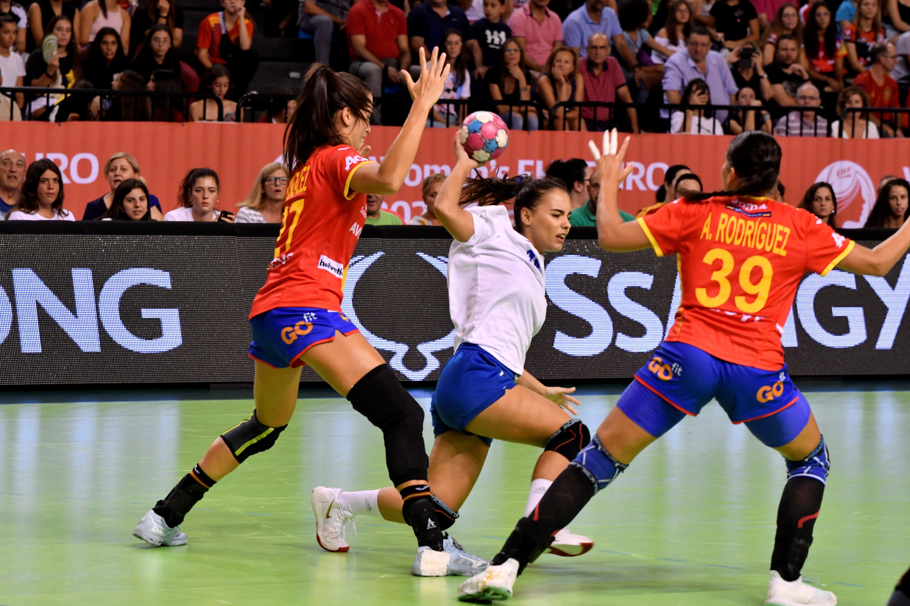
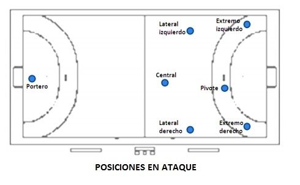

Duración del Partido
Un partido de balonmano se divide en dos tiempos de 30 minutos cada uno, con un descanso de 10 minutos entre ellos. En caso de empate en fases eliminatorias, se juegan dos tiempos extra de 5 minutos cada uno. Si persiste el empate, se define por lanzamientos desde los 7 metros.
Jugadores y Posiciones
Cada equipo está compuesto por 7 jugadores en cancha (6 de campo y 1 portero) y hasta 7 suplentes. Se pueden hacer cambios ilimitados. Las posiciones en el campo incluyen extremos, laterales, central, pivote y portero.
Reglas Básicas del Juego
Los jugadores pueden botar, pasar y lanzar el balón, pero tienen restricciones como:
- Máximo de 3 pasos sin botar el balón.
- No se permite tocar el balón con los pies.
- El área del portero solo puede ser pisada por el guardameta.
Faltas y Sanciones
Existen diferentes tipos de faltas en el balonmano, como la falta en ataque, el juego brusco o la defensa antirreglamentaria. Las sanciones pueden ser:
- Advertencia (tarjeta amarilla).
- Exclusión de 2 minutos.
- Descalificación (tarjeta roja).